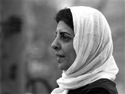

پذيرش > سایت نوشته ها > استراتژی های مقاومت زنان در گفتمان رسمی حجاب
 قانون حجاب قانون حجاب

 استراتژی های مقاومت زنان در گفتمان رسمی حجاب استراتژی های مقاومت زنان در گفتمان رسمی حجاب
6 مهر 1387 - شبکه بین المللی همبستگی با مبارزات زنان ایران / پروین اردلان - نسخه قابل چاپ
از 8 مارس 1357 که بيش از 30 هزار زن اولين اعتراض جمعي و فمينيستي شان را به اجباري شدن حجاب شکل دادند و «در بهار آزادي / جاي حق زن خالي» را سردادند، تاکنون 27 سال مي گذرد. يعني نزديک به سه دهه است که قانون حجاب بر بدن ما زنان حاکم، ومسئله پوشش مان از مباحث محوري در گفتمان سياسي دوران مان شده است. طي اين سال ها، تلاش هاي بسياري شد تا مفهوم حجاب در تمام جوانب زندگي مان رو بنماياند ونه تنها تصوير«باحجاب»، بلکه«رفتار باحجاب» و «کلام باحجاب» را در زندگي مان نهادينه کند؛ تا، با جاذبه و اشعه اي که داريم مردان را کور نکنيم! اگر در دوران پهلوي با مفهوم «کشف حجاب» به عنوان يک کشف مردانه و شاهانه آشنا شديم، بعد از انقلاب هم، با«حجاب اجباري»، به عنوان اجبارو مقابله به مثلي مردانه، جبر را به جاي آزادي بر تن مان کرديم. پس از آن، مفاهيم مردانه ساز بسياري به فرهنگ لغت حجابمان وارد شدند: «بي حجاب، باحجاب، بدحجاب، خيابان حجاب، باشگاه ورزشي حجاب، مانتوفروشي هاي زنجيره اي حجاب ...» همين طور اشکال ديگري از حجاب به فرهنگ لغت شهري ما راه يافتند تا عرصه عمومي را از زنان بگيرند و حجاب را در نظام ارزشي ما بگنجانند. مانند آموزش رايگان حجاب!: «حجاب مصونيت است نه محدوديت، حجاب ارزنده ترين زينت زن است، خواهرم حجاب تو کوبنده تر از خون من است،...» و نصب الزامات حجاب مانند: «رعايت حجاب اسلامي الزامي است» يا «از پذيرفتن زنان بدحجاب معذوريم» در ادارات، مراکز آموزشي، بر روي بليط ها و داخل اتوبوس ها، ديوارنوشته ها و اعلانات تبليغاتي در سراسر شهر...که گاه ناظر را به ياد «پارک کردن مساوي است با پنچري» مي انداخت! و همچنين حراست هاي منتظر در ادارات و سازمان ها و...براي «معاينه فني حجابمان»! با اينهمه تصاوير رنگارنگ براي آموزش بي وقفه حجاب، دور بي راه نبود اگر ناگهان تصويرگشت کميته يا «لباس هاي وحشت زا» را مي ديديم، ناخودآگاه دست هايمان به سمت روسري هايمان مي رفت.
با آنکه بررسي تاريخي مفاهيم در رويکرد تاريخي شان امري مهم به شمار مي آيند سخن از حجاب گاه نيز در هر مقطعي معاني گوناگون و کارکردهاي مختلف داشته است. اما به طورکلي، کشف حجاب، يا حجاب اجباري با هر تعريفي که از آن ها ارائه شده است در گفتمان سياسي ما به مثابه يک سيستم همسان ساز براي اعمال سياست جنسيتي نظام عمل کرده است. اين سياست هم در قالب قانون و استفاده از زور و هم از طريق نهادهاي آموزشي و هم از طريق شيوه هاي تبليغي نقش اقناعي داشته است. اما باوجود اين فشارها، همواره، سياست هاي اعمال شده حاکم با واکنش زنان نيز روبه رو بوده است. همان¬طور که همراهي آنان به تقويت سياست هاي حاکم کمک کرده، مقاومت آنان در تضعيف يا تغيير اين سياست ها عمل کرده است. همان طور که دوروتي اسميت مي گويد: «زنان در فرايند درگيري با قيد و بندهاي گفتماني فعالانه نقش هاي دفاعي و فاعلي براي خود دست و پا مي کنند.» به جرئت مي توان گفت که در برابر گفتمان رسمي حجاب، زنان با استراتژي هاي مختلف مقاومت خود، مفهوم حجاب را تغيير داده و به نفع فضاي برتر براي خود همت گماشته اند. به اعتقاد موهانتي فمينيست پسااستعمارگرا سياست جنسي مردان هدف سياسي واحد دارد و آن تضمين وابستگي زنان به هرقيمتي است. به همين دليل، خشونت عليه زنان همه جا ديده مي شود. زنان به طور سيستماتيک قرباني کنترل مردان هستند اما اين که زنان را قرباني صرف بدانيم آن ها را به موضوع شناختي تبديل کرده ايم که بايد ازخودش دفاع کند. درواقع، شيوه هاي کنترل زنان با استراتژي هاي مقاومت زنان عوض مي شود.Lewis&Mills،2003:65) (موهانتي حجاب را به عنوان شکلي از کنترل، مورد توافق همه فمينيست ها مي داند اما معتقد است اين مسئله را بايد در شرايط خاص جامعه توضيح داد. او در اين باره ايران را مثال ميزند: «فضاي نمادين پرده جداسازنده ممکن است در شرايط خاصي مثل هم باشد اما به معني داشتن معني يکساني در عرصه اجتماعي نيست. زنان طبقه متوسط در 1979 حجاب سر کردند تا همبستگي شان را با خواهران طبقه کارگر نشان دهند در حالي که، الان در ايران طبق قانون، حجاب اجباري است. درحالي که، براي هر دو موقعيت يکساني از حجاب ذکر مي شود، يعني مخالفت با شاه و استعمار غربي در مورد اول و اسلامي شدن واقعي ايران در مورد دوم، معاني مشخصي در حجاب به سر کردن زنان ايراني داده است. اين دو به وضوح متفاوت اند. در مورد اول، حجاب هم از طرف زنان مخالف پذيرفته مي¬شود و هم ژستي انقلابي است، اما در مورد دوم اجباري و دستور حکومت است Lewis&Mills،2003:63) )
اين که بدانيم در هر دوره تاريخي وقتي سخن از حجاب مي شد منظور چه نوع پوششي بوده و چه کارکردي داشته و چه مقاومت هايي صورت گرفته است با دقت بيشتري به اين مقوله و بستر تاريخي آن مي¬پردازيم.
در قرن نوزدهم و اوائل قرن بيستم و به دنبال گسترش سيطره غرب در حوزه هاي سياسي، اقتصادي و اجتماعي و فرهنگي، ايران نيزبي نصيب نماند. تلاش هاي دول اروپايي براي مستعمره سازي مستقيم و غيرمستقيم در ابعاد سياسي و اقتصادي، شکست ايران از روسيه و توجه ايران به ضعف و ناتواني کشور در برابر دولت هاي اروپايي و ضرورت دسترسي به مدنيت، از جمله عواملي بود که ايران را به توجه واداشت. پذيرفتن نظام آموزشي غرب، اعزام محصل به اروپا، دعوت از اساتيد خارجي، گسترش چاپ، انتشار نشريات گوناگون ... سبب شکل گيري گفتمان مدرنيته بر ايده گذار از جامعه سنتي از طريق نوسازي و غربي شدن شد. تحولات سياسي در ايران در اين دوره بر موقعيت زن تاثيرگذار بود و زنان، خودشان نيز در گسترش و شکل گيري اين فرايند نقش داشتند. انقلاب مشروطه و تحول در نظام سياسي حاکم به نظام پارلماني و آزادي هاي سياسي به زنان فرصت و امکان فعاليت داد. مشارکت زنان در انقلاب مشروطه بيانگر حضور سياسي و اجتماعي زنان در عرصه عمومي بود. حضوري که در تلاش بود حقوق شهروندي خود را رسميت بخشد. مسئله تعليم و تربيت زنان و اصلاح وضعيت زنان نه تنها از سوي زنان مطرح شد که در دستور کار احزاب سياسي نيز قرار گرفت. با حضور بيروني زنان، مقاومت نيروهاي سنتي نيز در برابر آنان آغاز شد. اما «مقاومت جناح سنتي دربرابر اين خواست ها نه تنها آن را خاموش نکرد بلکه بر شدت آن افزود و مقالات آتشيني در مجلات و روزنامه¬هاي فارسي زبان داخل و خارج ايران در دفاع از حقوق بانوان و محکوم کردن شرايط سخت حاکم بر آنان منتشر شد.» ( خشونت و فرهنگ، 1371: 10) و زنان به عنوان آغازگران مدرنيته در ايران بر ايفاي حقوق خود پافشاري کردند. مطالبه حقوق برابر با مردان و برخورداري از حقوق شهروندي چون حق راي، برخورداري از حق انتخاب لباس، مسکن، شغل و... از جمله چالش هاي اساسي زنان با مخالفان فعاليت مستقل شان بود. با وجود اين، نقش خود زنان کمتر در اين تعاملات منعکس شده است.
پيش از انقلاب مشروطه نوع پوشش زنان چادر و چاقچور بود (خشونت و فرهنگ، 1371: 10)، با انقلاب مشروطه و مشارکت زنان در انقلاب و همراهي مردان دراين عرصه، موضوع حجاب زنان به ويژه در بين زنان طبقات متوسط و تحصيل کرده و بيشتر به عنوان ابزاري که تحرک زنان را کاهش مي دهد مطرح بود. برخي از آنان چون صديقه دولت آبادي پس از تحصيل در پاريس و بازگشت به ايران قبل از کشف حجاب رضاخاني- با لباس اروپايي و کلاه ظاهر شد. در اولين دوره سياست نوسازي فرهنگي، به فرمان رضاشاه، ابتدا لباس مردان به لباس متحدالشکل درآمد و دستور استفاده از کلاه پهلوي صادر شد، درمرحله بعد بود که دستور کشف حجاب زنان صادر شد و اين امر از سوي مقامات رسمي «آزادي زن» معني شد. (خشونت و فرهنگ، 1371، 11) حال آنکه پيش از کشف حجاب، زنان برداشتن حجاب را آغاز کرده بودند، و بعد رسمي بخشيدن به آن، انتخاب زنان را در سايه، و مقاومت آنان را افزايش داد. در سال هاي اوليه بعد از کشف حجاب، بسياري از زنان مذهبي خانه نشين شدند اما مقاومت زنان براي مقابله با اين زور به تدريج قانون کشف حجاب را از قابليت اجرا انداخت و قانون کشف حجاب که در سال 1314 مقرر شد در سال 1320 لغو شد و زنان با حجاب توانستند وارد عرصه هاي عمومي شوند. اين بي حجابي اجباري و نظامي که در دوره رضاخان با خشونت هم همراه بود در دوره پسر او محمد رضا پهلوي بيشتر جنبه اقناعي به خود گرفت و مفهوم زن مدرن با «بي حجابي» و زن سنتي با «باحجابي» يکسان گرفته شد. زن باحجاب به معناي زن مذهبي نبود بلکه بيشتر تصويري از زن سنتي يا «زن نجيب» را ارائه مي داد. به رغم اجراي سياست هاي اقناعي وسيع، در همين دوره بر تعداد زنان باحجاب مذهبي سياسي افزوده شد و حجاب زن مسلمان مفهومي سياسي يافت و با انقلاب اسلامي نشانه اي از انقلابي بودن شد، همانطور که بي حجابي با ضد انقلابي بودن تعريف شد.
با انقلاب اسلامي در ايران، فرمان حجاب قبل از آن که بخواهد با خشونت همراه شود با مقاومت متشکل و سازمان يافته زنان روبه رو شد و همين امر دولت را ابتدا به عقب نشيني واداشت تا سپس با پي¬گيري استراتژي گام به گام و سپس سرکوب مخالفان و درهم¬شکستن مقاومت متشکل زنان ادامه يابد. اين سياست به ويژه در دهه 60 و دوران جنگ به خوبي پاسخ داد و حجاب به مثابه هويت زن مسلمان ارزش گذاري شد. دستور حجاب اجباري در مدارس و ادارات دولتي اجرا شد و سپس به ديگر حوزه هاي عمومي مانند رستوران ها، فروشگاه ها، ...گسترش يافت و با اعمال خشونت قانوني همراه شد. فرمان حجاب نيز مانند فرمان بي حجابي با مقاومت زنان روبه رو شده است. در اين عرصه هم، مقاومت زنان مخالف با اين سياست، تصويري عمومي داشته است و تغيير در نوع پوشش را به رغم عدم تغيير قانون آن در دهه¬هاي گوناگون بعد از انقلاب (60، 70، 80) شاهد بوده ايم. بعد از انقلاب اسلامي، اجباري شدن حجاب زنان از سوي نهادهاي رسمي به مثابه خواسته اسلام، ضديت با امپرياليسم و همبستگي انقلابي توجيه شد. اما در دوره هاي بعدي به مثابه قانون، ارزش، شخصيت، حيثيت مطرح بوده است و در پي مقاومت¬هاي زنان در بخش غيررسمي مفهوم ارزشي حجاب نيزعوض شده است. شايد بتوان يکي از نشانه هاي آن را تغييري دانست که زنان به فرم روسري ها و مانتوهايشان داده اند و با تغيير نوع حجابشان، در تغيير مفاهيم حجاب يا بي معني کردن مفهوم رسمي و ارزش رسمي، و درنتيجه در تغيير سياست هاي رسمي نقش داشتند.
حجاب امري الزامي در عرصه عمومي است و به همين دليل هم ايستادگي زنان در برابر الزامات گفتمان حاکم حضور بيروني دارد. اين مقاومت الزامآً به معناي برخورداري از آگاهي فمينيستي نيست بلکه مي تواند در تقابل با آن نيز باشد. شکل آگاهانه تر آن بيشتر در آثار مکتوب و آثار هنري منعکس مي شود اما جالب آنکه هرجا گفتماني مسلط بوده، به ويژه در حوزه زنان و به ويژه در موضوع حجاب، مقاومت زنان در برابر گفتمان غالب بيشتر در نوع پوشش و چگونگي آن يعني نماي بيروني ظاهر شده است تا در آثار هنري يا نوشتاري منتقدانه. به اين دليل که کنترل و سانسور آثار نوشتاري و هنري به مراتب آسان تر از کنترل ميليون ها جمعيت با سليقه هاي شخصي متفاوت و در گروه هاي سني متفاوت است. سانسور و ممانعت از چاپ آثاري که مغاير با گفتمان غالب بود سبب مي شد که حضور مکتوب زنان کمتر در نوشته و بيشتر در نوع پوشش آنان ظاهر شود. به طور مثال طي سال هاي پس از انقلاب، وحتي تاکنون، نوشتن در ضديت با حجاب اجباري خط قرمزي پررنگ بوده است و طي سال هاي اخير است که لااقل مي توان در نقد آن نوشت، به¬همين دليل، درست در سال هايي که به دليل سانسور حاکم، نوشتن درباره حجاب ناممکن بود بسياري از فعالان جنبش زنان در خارج کشور به انتشار مطالبي در اين حوزه پرداخته اند. شايد از همين روست که تعداد تحقيقات دانشگاهي درباره حجاب در ايران انگشت شمار است زيرا هر گونه تحقيقي که نتيجه آن به نقد حجاب منجرشده پذيرفته هم نشده است و يا اصلا شهامتي براي طرح آن وجود نداشته است. اما در حوزه عمومي تغيير پوشش به رغم وجود قانون حجاب و دستور العمل هاي آن از مانتوي¬هاي بلند، مقنعه، شلوار گشاد و با رنگ هاي تيره، به تصاويري از مانتوهاي کوتاه، رنگي، روسري هاي کوچک، شلوارهاي کوتاه، آرايش هاي زياد....تغيير شکل داده است. اين اتفاق ها در خلا رخ نمي دهد همه تصاويري از مقاومت هاي فردي و جمعي زنان در جامعه و تاثير آن ها بر گفتمان غالب و مسلط است. اين فعاليت ها تشکل يافته نيست اما مفهومي جمعي را به تصوير مي کشد، وقتي نداي فغان و واويلا بر مي خيزد که تمامي ارزش ها زير پا گذاشته شده است و نيروي پليس براي بازگرداندن ارزش ها به کار مي آيد بدين معناست که مفهوم جمعي اين حرکت ها کارگر شده است.
به هرحال در مطالعه فرايندهاي سياسي ايران تغييرات مفهومي حجاب را مي توان از خلال سياست هاي رسمي و همچنين مقاومت هاي غيررسمي زنان دنبال کرد. بنيان اصلي نظريه فمينيستي، مردسالاري است که نظام سلطه مردانه است و از طريق نهادهاي اقتصادي، سياسي، و اجتماعي اش زنان را سرکوب مي کند. در تمامي مظاهر تاريخي جامعه مردسالار، چه فئودالي، چه سرمايه داري ... نظام جنس- جنسيت و نظام تبعيض اقتصادي به طور همزمان عمل مي کنند(هام، 1382: 323) نظام مردسالاري چه در شکل مدرن چه در شکل سنتي آن با ابزارهاي گوناگون خواهان کنترل زنان بوده است و همه آن ها در کنترل زنان منافع داشته اند هر چند در شکل مدرن آن کشف حجاب اتفاق مي افتد و در شکل سنتي آن قانون حجاب حاکم مي شود اما در همه حال هدف آنان کنترل زنان بوده است و حجاب نيز در هر شکلش نسبتي با کنترل زنان و از طريق آن کنترل جامعه دارد. به باور من کليه نظام هاي سياسي ايران از مشروطه تاکنون با هر زمينه فکري که داشته اند نسبت به زن نگاه مردسالارانه داشته و تلاش شان بر کنترل زن در عرصه عمومي بوده و کنترل پوشش زنان يکي از ابزارهاي آن و رنگ يا شيوه پوشش زنان در هر دوره اي نماي بيروني اين سياست ها و واکنش هاي زنان به اين سياست ها بوده است. و جالب تر آن که غالب صاحبنظران ومسئولاني که ديدگاه هايشان در اين حوزه انتشار يافته است نه زنان بلکه مردان روشنفکر و روحاني بوده اند که براي نوع پوشش ما حکم تعيين کرده اند.
 - - - - - - - - - - - - - - - - - - - - - - - - - - - - - - - -
منابع:
1. جعفريان، رسول، داستان حجاب در ايران پيش از انقلاب، مرکز اسناد انقلاب اسلامي، 1383.
2. ريتزر، جرج، نظريه هاي فمينيستي در دوران معاصر، ترجمه محسن ثلاثي، تهران، انتشرات علمي ، 1374.
3.سازمان اسناد ملي ايران، مديريت پژوهش انتشارات و آموزش، خشونت و فرهنگ (اسناد محرمانه کشف حجاب ، 1323-1313).
4. هام، مگي، فرهنگ نظريه¬هاي فمينيستي، ترجمه فيروزه مهاجر، نوشين احمدي خراساني و فرخ قره داغي، تهران، نشرتوسعه، 1382.
5. Lewis Reina and Mills Sara, Feminist Poscolonial Theroy ،Theory ،Edinbourgh university Press LTD،2003 .
شبکه بین المللی همبستگی با مبارزات زنان ایران
ارسال به
بالاترین
،
توییتر
،
فریندفید
،
فیسبوک
در همين بخش :
 یک خبر تلخ؟ یک قانونشکنی؟ یک تصمیم بخشنامهای جدید؟ یک خبر تلخ؟ یک قانونشکنی؟ یک تصمیم بخشنامهای جدید؟
چرا بایست به سکسوالیته پرداخت؟ / نفیسه آزاد
آزارجنسی خانگی؛ «قربانی» نه، «نجات یافته»
زنان، بزرگترین بازندگان بهار عرب
سانسور از دیدگاه جنسیتی/الهه امانی
ديگر بخش ها :
طرح یک میلیون امضا
|
مقالات
|
سایت نوشته ها
|
اخبار
|
گزارش كمپين
|
گفت و گو
|
علیه سکوت
|
كوچه به كوچه
|
نامه های شما
|
گزارش ویژه
|
گفتگو با اعضا
|
ویژه سالگرد کمپین
|
تصویر برابری
|
دل آرام علی
|
تریبون
|
مقالات
|
تاریخ شفاهی
|
خارج از چارچوب
|
کتابخانه
|
درباره کمپین
|
کمپین در شهرها
|
کمپین در بند
|
صدای تغییر
|
ویژه 22 خرداد
|
لایحه حمایت از خانواده
|
گالری
|
عشا مومنی
|
امیر یعقوبعلی
|
خدیجه مقدم
|
راحله عسگری زاده و نسیم خسروی
|
پروین اردلان،جلوه جواهری، مریم حسین خواه، ناهید کشاورز
|
زینب پیغمبرزاده
|
سعیده امین، سارا ایمانیان، محبوبه حسین زاده، ناهید کشاورز و همایون نامی
|
احترام شادفر
|
نسیم سرابندی زاده،فاطمه دهدشتی
|
وبلاگ مهمان
|
پرونده خرم آباد
|
دستگیری ها
|
مریم مالک
|
پرستو اللهیاری
|
مهرنوش اعتمادی
|
سمیه رشیدی
|
Other Languages
|
همراهان
|
«فراخوان کمپین ده روز با بهاره هدایت»
| English
|